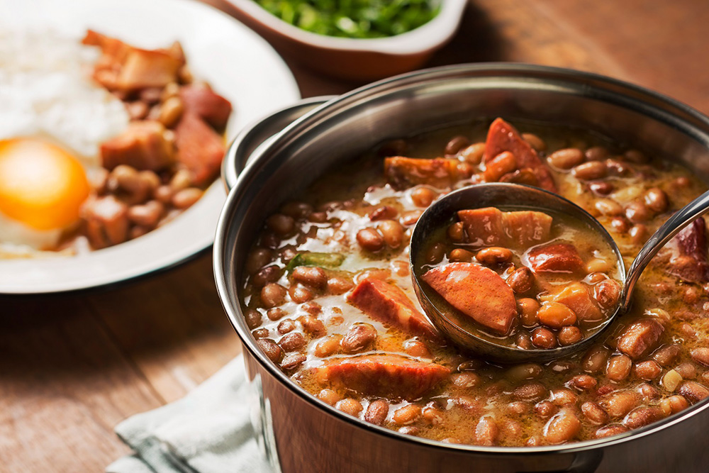

Receita do Raphael
Feijão Aroeira

Ingredientes:
- 500g - feijão vermelho
- 1,8L - água
- 150g - bacon
- 100g - calabresa
- 2un. - pimenta dedo de moça
- 2un. - cebola
- 1/2un. - cabeça alho
- alecrim
- sal
Modo de preparo:
- Cozinhe o feijão com o auxílio de uma panela de pressão, durante aproximadamente 30 minutos
- Pique a cebola, o alho, o bacon, a calabresa e pimenta dedo de moça
- Após o cozimento do feijão, frite a cebola, o alho e a pimenta
- Misture no feijão
- Frite o bacon e a calabresa
- misture no feijão
- Ligue o fogo da panela do feijão e deixe começar a fervura
- Tempere com sal e alecrim da forma como preferir
Desenvolvido por Raphael Q. | ©2022